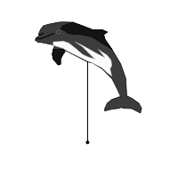
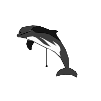

<HTML>
<!--  $Id: gmt_cetaceans.html,v 1.1 2008-04-30 00:30:09 guru Exp $  -->
<TITLE>GMT for Windows</TITLE>
<BODY bgcolor="#ffffff">
<CENTER><H1>GMT symbols for Whale-watchers and marine biologists</CENTER>
<P><BR><P>
These are symbols contributed by Pablo Vald&eacute;s.  Below is the README and PNG examples
of all the symbols.<BR>
Click to download the entire 
<A HREF="ftp://ftp.soest.hawaii.edu/gmt/contrib/Whale-watching_symbols_for_GMT.zip">Cetacean symbol package</A>
from the SOEST ftp site, or visit the other mirror sites' contrib directory.

<P>
<PRE>
GMT symbols for Whale-watchers and marine biologists
---------------------------------------------------

What's this?
-----------
This is a small collection of extra symbols for Generic Mapping Tools (GMT) software. 
In his current state can be usefull mainly to whale watchers or cetologists that want
include fine symbols of marine mammals in a map created by GMT showing their sigthings
or strandings episodes. The main upstream authors of GMT are: Paul Wessel <wessel@soest.hawaii.edu>
and Walter Smith <wsmith@nodc.noaa.gov>. Please don't bother them for questions relative
to this collection or ask them for new symbols, instead e-mail me, the author of the
symbols: Pablo Vald&eacute;s < > (Spanish preferred, English and French also acceptable).

Currently covers 18 families of symbols covering 16 species of marine mammals, 
mostly whales and dolphins, and 2 more simbols for indeterminate dolphins or whales. 
Each family comprises also several versions of the same symbol. In the future I plan 
to create more symbols for other species. I greatly appreciate your sugerences
and feedback.

These symbols are freely available under a GPL license.

How to use the symbols?
-----------------------
First of all, you need to have a functional version of GMT installed in your computer. 
These symbols work fine for me using a GMT version 4.2.0-1. 

1: Before to start, think in the type of map you want to obtain and prepare your data. 
  If you want to create a 2D map (most common situation) you need psxy, if you want a 3D
  map you should use psxyz instead. Think also in how many types of different animals 
  you want to show in each individual map. You should have a different .xy file for each
  species that you want to show. You could want also to show separately males and females 
  or adults/youngs/calfs. In order to do this, you will need to place the data for each one
  of these groups in a different .xy (or .xyz) file or GMT can not will be able to draw a 
  different symbol for each group.

 A valid file.xy is simply a text file containing several lines like this:

-5:40:44   30:30:01  10  0  0  LB  This is the text of the label. specimen found in -5:40:44 W
 6:45.5    43        10  0  0  LB  A specimen sigthed at 43:00:00 N LAT and 6:45:30 E LON  
-5.707     42.7543   12  90 0  LB  A third dolphin, now a text of 12 points rotated 90 degrees

  Psxy can deal with several lat/lon formats. All of this are accepted.  Usually you will
  finish having a lot of .xy files and many of them will have only one or a few lines, but
  this is perfectly OK for psxy (If you want to use psxyz the file is sligthly different, 
  look at the GMT documentation). You are also asking for a text size of 10 points a rotation 
  angle of 0 and a label at the left bottom, but this is not so relevant here as is for pstext.  

2: Choose the symbols you want looking at the pics. 
 This is the list of symbols available currently:

English name (scientific name) 
        - symbols available
-------------------------------
Cetacea
  Toothed Whales, SubO. Odontoceti
     1 Common dolphin (Delphinus delphis) 
        - ddelphis_low.def
        - ddelphis.def
        - ddelphis_high.def

     2 Stripped dolphin (Stenella coeruleoalba) 
        - stripped_low.def
	- stripped.def
	- stripped_high.def

     3 Bottlenose dolphin (Tursiops truncatus) 
        - bottlenose_low.def
        - bottlenose.def
        - bottlenose_high.def

     4 Atlantic White-sided dolphin (Lagenorhynchus acutus) 
       - atlanticwhitesided_low.def 
       - atlanticwhitesided.def
       - atlanticwhitesided_high.def

     5 Killer whale (Orcinus orca) 
        - killerwhale_low.def
        - killerwhale.def
        - killerwhale_high.def

     6 Risso's dolphin (Grampus griseus) 
        - rissos_low.def
        - rissos.def
        - rissos_high.def

     7 Long- Finned Pilot whale (Globicephala melaena) 
        - pilotwhale_low.def
        - pilotwhale.def
        - pilotwhale_low.def

     8 Common porpoise (Phocoena phocoena) 
        - commonporpoise_low.def
        - commonporpoise.def
        - commonporpoise_high.def

     9 Beluga (Delphinaterus leucas) 
        - beluga.def 
        - belluga_high.def
        - beluga_couple.def

     10 Cuvier's beaked whale (Ziphius cavirostris) 
        - beakedwhale_low.def
        - beakedwhale.def
        - beakedwhale_high.def

     11 Sperm whale (Physeter macrocephalus) 
        - spermwhale_low.def
        - spermwhale.def
        - spermwhale_high.def

     12 Pygmy sperm whale (Kogia breviceps)
        - pigmyspermwhale_low.def
        - pigmyspermwhale.def
        - pigmyspermwhale_high.def

     13 a dolphin (unknown species)
       	- odontoceti.def

  Baleen Whales, SubO. Misticeti:
     14 Minke whale (Balaenoptera acutorostrata)
     	- minkewhale.def
        - minkewhale_low.def
	- minkewhale_high.def
	- minkewhale_threesome.def

     15 Fin Whale (Balaenoptera physalus)
        - finwhale.def
	- finwhale_low.def
	- finwhale_high.def

     16	Sei Whale (Balaenoptera borealis)
        - seiwhale_low.def
	- seiwhale.def
	- seiwhale_high.def

     17 a whale (unknown species)
       	- misticeti.def

Pinnipedia, Seals:
     18 Grey Seal (Halichoerus grypus)
     	- greyseal.def

3: No installation needed, simply browse the subdirectories and copy the symbols 
 (.def files) that you want to your working directory. 

4: Call them directly from the commands line, or (better) include 
  the corresponding lines in a GMT script like this: 

#!/bin/bash
  pscoast -JM20c -R-10/6/33/36 -K -W0.5pt/0 -P -Gblack > myfile.ps
  psxy minkewale_data.xy -Skminkewhale/0.5 -JM20c -R-10/6/33/36 -P -K -O >> myfile.ps
  psxy bottlenose_dolphin_data.xy -Skbottlenose/0.5 -K -O ...etc >> myfile.ps
  psxy killer_whale_data.xy       -Skkillerwhale/0.5 -O ...etc >> myfile.ps

 In our examples we will place all the .xy and .def files in our working directory, 
 but you can find more convenient to move them to several subdirectories named, for
 instance, data and symbols:

  psxy data/killer_whale.xy   -Sksymbols/oorca/0.5 -O ... etc >> myfile.ps

 In this case, please read also the points 1.2-1.3 of the file FAQ.txt

4: Run the bash script, print/open the output postscript file and enjoy. Alternatively 
if you had installed ps2pdf and xpdf you can convert first the postscript file 
to pdf adding something like this at the end of the script:

   ps2pdf myfile.ps myfile.pdf
   xpdf myfile.pdf

Still confused? Please take a look at the file FAQ.txt and the 
documentation provided with GMT.
</PRE>
<P>
<table border=1 cellspacing=2 cellpadding=4 bgcolor="lightskyblue" bordercolor="black">
<tr>
<th colspan=1>atlantwhitesided.def</th>
<th colspan=1>atlantwhitesided_high.def</th>
<th colspan=1>atlantwhitesided_low.def</th>
</tr>
<tr>
<td></td>
<td></td>
<td></td>
</tr>
<tr>
<th colspan=1>bottlenose.def</th>
<th colspan=1>bottlenose_high.def</th>
<th colspan=1>bottlenose_low.def</th>
</tr>
<tr>
<td></td>
<td></td>
<td></td>
</tr>
<tr>
<th colspan=1>commondolphin.def</th>
<th colspan=1>commondolphin_halflow.def</th>
<th colspan=1>commondolphin_high.def</th>
</tr>
<tr>
<td></td>
<td></td>
<td></td>
</tr>
<tr>
<th colspan=1>commondolphin_low.def</th>
<th colspan=1>commondolphin_midhigh.def</th>
<th colspan=1>commondolphin_midlow.def</th>
</tr>
<tr>
<td></td>
<td></td>
<td></td>
</tr>
<th colspan=1>commonporpoise.def</th>
<th colspan=1>commonporpoise_high.def</th>
<th colspan=1>commonporpoise_low.def</th>
</tr>
<tr>
<td></td>
<td></td>
<td></td>
</tr>
<tr>
<th colspan=1>finwhale.def</th>
<th colspan=1>finwhale_high.def</th>
<th colspan=1>finwhale_low.def</th>
</tr>
<tr>
<td></td>
<td></td>
<td></td>
</tr>
<tr>
<th colspan=1>killerwhale.def</th>
<th colspan=1>killerwhale_high.def</th>
<th colspan=1>killerwhale_low.def</th>
</tr>
<tr>
<td></td>
<td></td>
<td></td>
</tr>
<td>
<tr>
<th colspan=1>minkewhale.def</th>
<th colspan=1>minkewhale_high.def</th>
<th colspan=1>minkewhale_low.def</th>
</tr>
<tr>
<td></td>
<td></td>
<td></td>
<td>
<tr>
<th colspan=1>seiwhale.def</th>
<th colspan=1>seiwhale_high.def</th>
<th colspan=1>seiwhale_low.def</th>
</tr>
<tr>
<td></td>
<td></td>
<td></td>
</tr>
<tr>
<th colspan=1>spermwhale.def</th>
<th colspan=1>spermwhale_high.def</th>
<th colspan=1>spermwhale_low.def</th>
</tr>
<tr>
<td></td>
<td></td>
<td></td>
</tr>
<tr>
<th colspan=1>stripeddolphin.def</th>
<th colspan=1>stripeddolphin_high.def</th>
<th colspan=1>stripeddolphin_low.def</th>
</tr>
<tr>
<td></td>
<td></td>
<td></td>
</tr>
</table>
</BODY>
</HTML>
